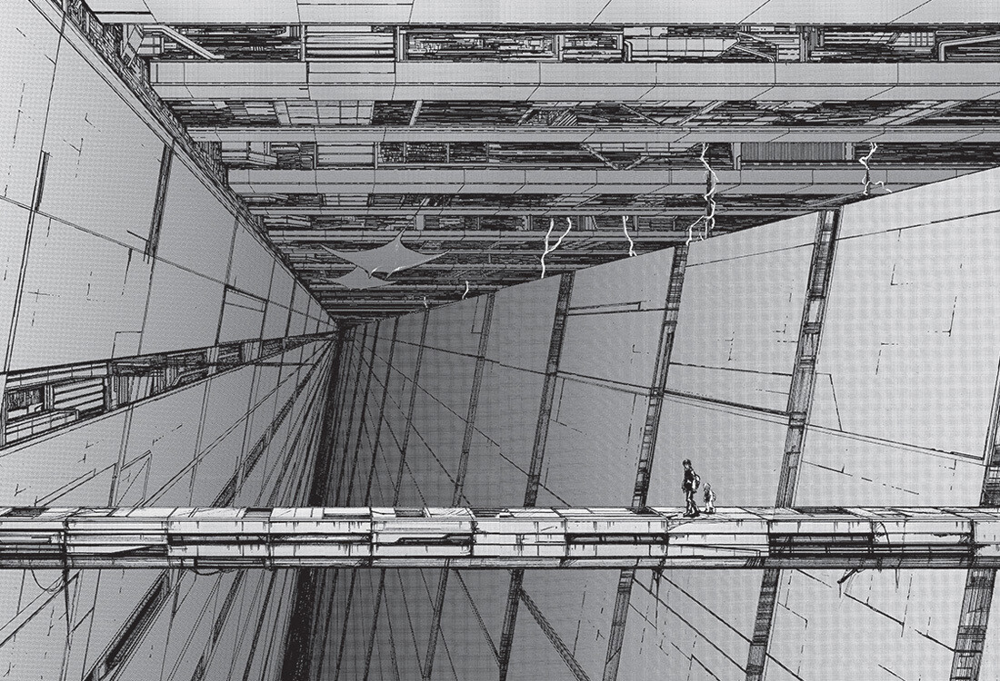

Нихэй Цутому родился в 1971 году. И в начале своего пути он даже и не думал, что однажды займётся рисованием манги. Нихэй обучался архитектуре и даже год проработал в США по специальности инженер-архитектор. Но к своему удивлению он понял, что просто чертить дома ему больше не интересно, он хотел, чтобы его рисунки жили, дышали и чтобы они рассказывали истории. Так, спустя год работы он вернулся в Японию, чтобы стать мангакой, и первое время до своего дебюта он начал набираться опыта, работая ассистентом у мангаки Цутому Такахаси, который известен, например работой под названием «Ледяное лезвие / Jiraishin» (1992).
Поднабравшись опыта и получив уверенность в себе, Нихэй наконец-то решился на дебют. Работа ассистентом помогла познакомиться с несколькими редакторами, которые и поручились за первую работу Нихэя. И, вот взяв в кулак своё архитектурное образование и опыт ассистента, Нихэй начал свой творческий путь.
Манга «Блейм» - это первая полноценная сериализация Нихэя, которая выпускалась в ежемесячном журнале сэйнэн-манги – «Afternoon». Именно в этом журнале в своё время выходили, и будут выходить такие хорошие манги как «Паразит / Parasyte» (1990), «Знаток Муси (Мастер Муши) / Mushishi» (1999), «Сага о Винланде / Vinland Saga» (2005) и многие другие.
Манга «Блейм» считается классикой японского киберпанка, не смотря на то, что в нём отсутствуют основные принцип этого самого «киберпанка», известные как критерий Дозуа. А именно - «High tech. Low life» («Высокие технологии, низкий уровень жизни»). А всё потому что в мире «Блейма» практически отсутствуют социальные взаимодействия и классовые расслоения. «Блейм» ближе именно к поджанру «Постапокалипсис-Киберпанк», когда все войны давно отгремели, а по руинам городов остались бродить последние люди и киборги.
Мир «Блейма», как бы это не звучало клишировано, это – Дарк Соулс, только в мире Киберпанка и Научной Фантастики. Как и творение Хидетаки Миядзаки, «Блейм» пропитан невероятно гнетущей атмосферой одиночества и безысходности. И при этом главный герой устало бредёт вперёд, с трудом не ломаясь под грузом свалившихся на него бед. Потому что у героя есть цель.
Про сюжет «Блейма» довольно тяжело говорить с уверенностью. Потому что, как и в Дарк Соулс общие события и ЛОР этого мира подаются через туманные недосказанности, через обрывки диалогов и случайных фраз, а так же через визуальные подсказки. Если вы смогли прочесть мангу до её финала, то наверняка почувствовали, что некоторые ружья так и не выстрелили, и вопросов под конец будет в десятки раз больше чем ответов. И я сомневаюсь, что сам Нихей знает на них ответы. Но я попробую вкратце рассказать про суть показанной в манге истории.
Возможно на Земле. Возможно в будущем. По бесконечным этажам техно-мира именуемого «Город» («The City») путешествует главный герой этой истории - бессмертный воин-киборг Килли.
Уровни этого мира, как слои в пироге, отделяет друг от друга так называемая «Мегаструктура» - колоссальное сооружение, состоящее из бесконечного числа секторов, слоёв и перекрытий. Большая часть Мегаструктуры пустует, но она продолжает расширяться с помощью роботов, которых называют - Строители. Они бывают самых разных видов и размеров и их основная программа - расширение и защита Мегаструктуры. В основном, они никогда не нападают первыми, но если они расценят, что кто-то представляет угрозу их работе, то шансов выжить у «врага» практически нет.
Некоторые обитатели мира манги порой объединяют слова «Город» и «Мегаструктура», и в этом есть своя правда, ибо спустя тысячи лет они сплелись в единый техногенный организм, который продолжает расти.
И вот в этом бесконечно перестраивающемся и растущем лабиринте, к своей заветной цели бредёт главный герой - Килли. Манга не даёт точного ответа на вопрос кем является главный герой и кто его послал, но по обрывкам информации, разбросанным по всей манге, мы понимаем, что он невероятно силен, вынослив и обладает оружием разрушительной силы. На протяжении всего произведения силы героя будут сильно варьироваться, потому что сам Нихей далеко не сразу сформатировал своё представление о главном герое и о его возможностях.
Килли движется по этажам в поисках местного макгаффина, под названием - Сетевые Терминальные Гены (Net Terminal Genes). С их помощью появится возможность получить доступ к Сетевой Сфере (Netsphere), которая даст обладателю таких генов администраторские права. А сама Сетевая Сфера даёт огромные возможности, в том числе контроль над Строителями и контроль над расширением Мегаструктуры.
| No. | 1 | 2 | 3 |
|---|---|---|---|
| Original release date | June 20, 1998 | December 16, 1998 | August 20, 1999 |
| Original ISBN | 4-06-314182-9 | 4-06-314194-2 | 4-06-314218-3 |
| English release date | August 9, 2005 | November 8, 2005 | February 7, 2006 |
| English ISBN | 1-59532-834-3 | 1-59532-835-1 | 1-59532-836-X |
Автор: Каунов Артём
Оцените данную статью после небольшой регистрации: